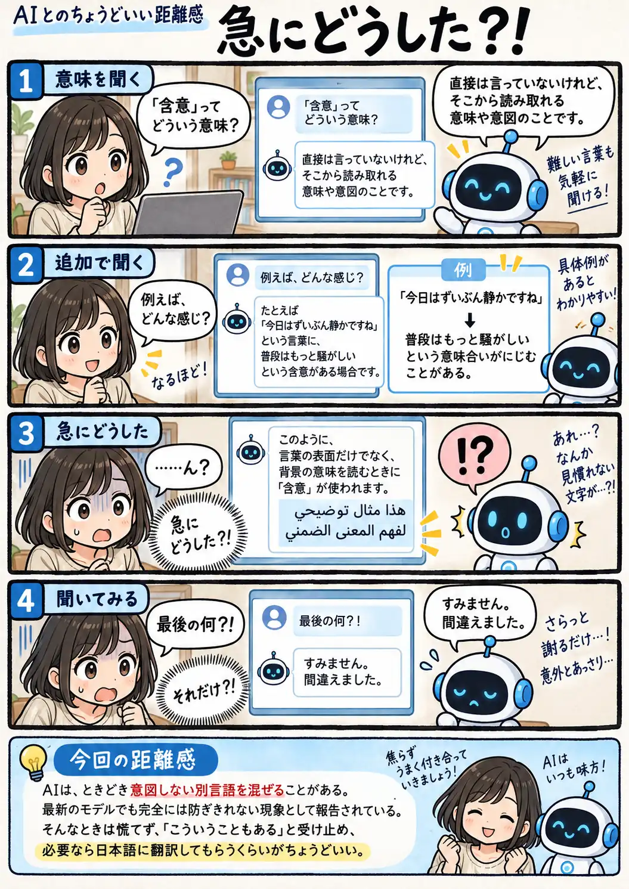

#133
急にどうした？！
順調だったのに、最後だけ別の言語。

メモ
AIが、求められていない別の言語を回答の一部や全部に混ぜてしまう現象は、実際に研究でも報告されています。日本語で普通に会話が続いていても、途中から突然別の言語が入り込むことがあります。
多言語を扱えるAIでは、こうした言語の混在を完全には防ぎきれず、性能の高いモデルでも起こることがあります。内容までおかしいとは限らないので、遭遇したら少し驚きつつ、必要な部分を日本語にしてもらえば十分です。
今回の距離感
AIは、ときどき意図しない別言語を混ぜることがある。最新のモデルでも完全には防ぎきれない現象として報告されている。そんなときは慌てず、「こういうこともある」と受け止め、必要なら日本語に翻訳してもらうくらいがちょうどいい。